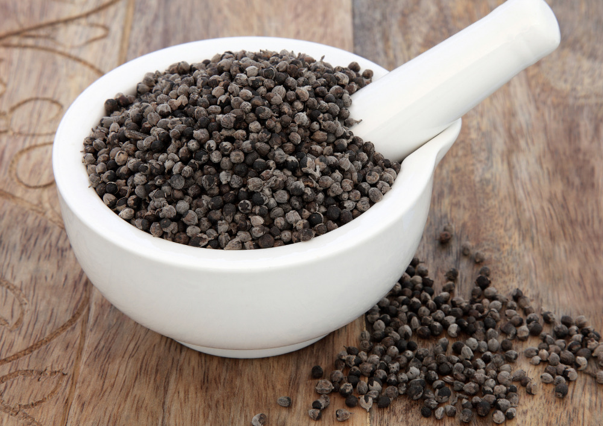

100 qr - 10 AZN
🌿 Hayıt Toxumu (Ərkudə) və Qadın Sağlamlığı
Hayıt toxumu (ərkudə) qadın sağlamlığı üçün təbiətin bəxş etdiyi ən güclü bitkilərdən biridir. Əsrlərdir hormonal balansı tənzimləmək və reproduktiv sistemi dəstəkləmək üçün istifadə olunur.
🩺 Hormonal Balans və Menstruasiya
- Qadınlarda hormonal balansı (progesteron səviyyəsini) təbii yolla tənzimləyir.
- Aybaşı düzənsizliyini aradan qaldırmağa kömək edir.
- Menstruasiya dövründə yaranan ağrıları və gərginliyi azaldır.
❤️ Ürək-Damar və İmmunitet
- Qan dövranını yaxşılaşdırır və ürək fəaliyyətini dəstəkləyir.
- Orqanizmin immun sistemini gücləndirərək xəstəliklərə qarşı müqaviməti artırır.
- Yorğunluğu azaldır və enerji səviyyəsini yüksəldir.
👩🦳 Dəri, Saç və Göz Sağlamlığı
- Hormonal səbəblərdən yaranan dəri problemlərini (akne və s.) azaldır.
- Saç tökülməsinin qarşısını almağa dəstək olur.
- Göz yorğunluğu və görmə zəifliyi üçün faydalıdır.
☕ İstifadə Qaydası (Dəmləmə)
1 çay qaşığı hayıt toxumunu bir az əzdikdən sonra üzərinə 200ml qaynar su əlavə edin. 10-15 dəqiqə dəmləyin və süzərək için. Gündə 1-2 dəfə yeməkdən sonra qəbul edilməsi tövsiyə olunur. (2-3 həftəlik kursdan sonra 1 həftə fasilə verilməlidir).
⚠️ Vacib Qeyd
Hamiləlik və südvermə dövründə istifadə etməzdən əvvəl mütləq həkimlə məsləhətləşin. Həddindən artıq dozada istifadə etməyin.
 Instagram: @derman_bitkileri
Instagram: @derman_bitkileri